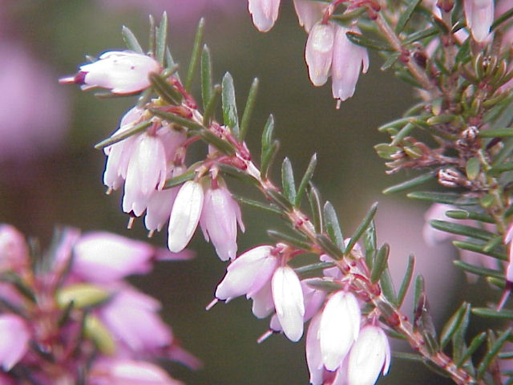
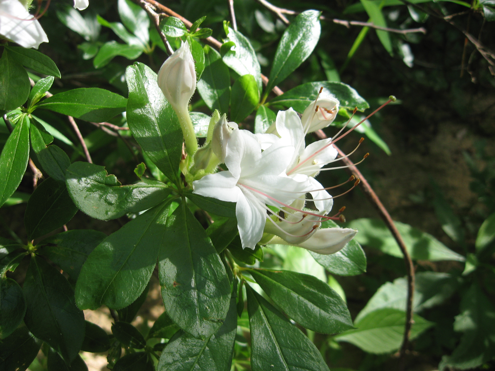
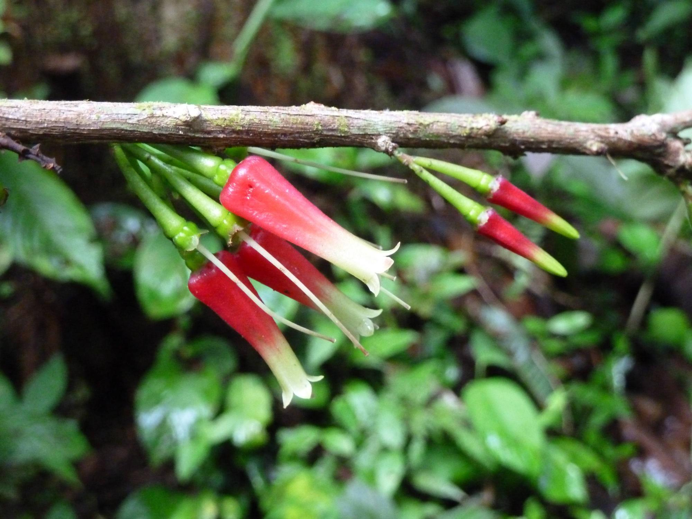
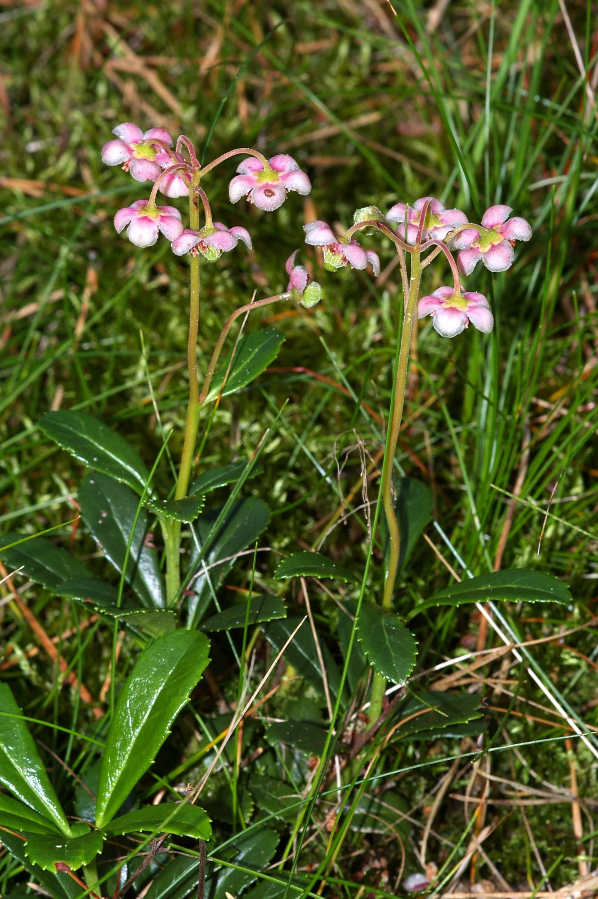
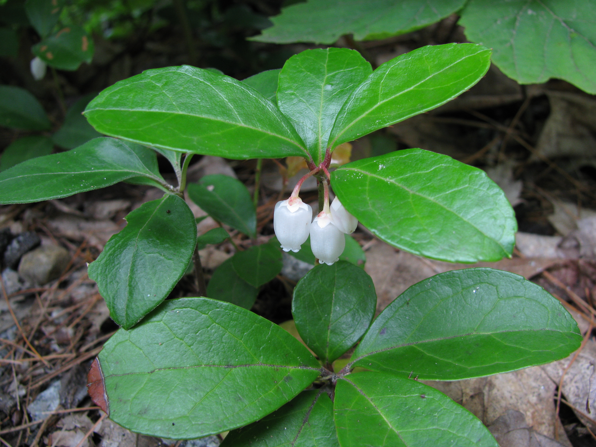

Ericaceae
heath/heather family
|  Erica carnea (winter heath) from Wikimedia Commons by Kurt Stüber, CC BY-SA 3.0 |
 Rhododendron arborescens (sweet azalea) from Wikimedia Commons by Mason Brock (Masebrock) - Own work, Public Domain |
|  Satyria panurensis from Wikimedia Commons by Eduardo Chacón-Madrigal, CC BY 4.0 |
 Xylococcus bicolor (mission manzanita) from Wikimedia Commons by John Rusk, CC BY 2.0 |
{kind=link}
{kind=link}
{kind=link}
botanical characteristics
Botany in a Day, p. 132-7 | "Ericaceae", Wikipedia
- growth form
- morphologically diverse range of taxa, including herbs, dwarf shrubs, shrubs, and trees
- members of the Monotropoideae (ghost pipe) subfamily lack chlorophyll and feed on dead organic matter in soil
- stems/leaves
- leaves are usually evergreen, alternate or whorled, simple and without stipules
- leaves can be needlelike
- flowers
- flowers are hermaphrodite
- petals are often fused (sympetalous) with shapes ranging from narrowly tubular to funnelform or widely urn-shaped
- corollas are usually radially symmetrical (actinomorphic) and urn-shaped
- usually 5 sepals united at the base and 5 usually united petals (sometimes 4 or each, rarely more or less)
- color usually white to pink or red
- reproductive structures
- same number or twice as many stamens as petals
- ovary positioned either superior or inferior
- usually 5 (sometimes 4, rarely more or less) united carpels with partition walls
- fruit matures as a capsule, berry, or drupe (rarely)
distribution
"Ericaceae", Wikipedia
- about 4250 known species spread across 124 genera
- nearly worldwide distribution
- absent from continental Antarctica, parts of the high Arctic, central Greenland, northern and central Australia, and much of the lowland tropics and neotropics
- the family is largely composed of plants that can tolerate acidic, infertile, shady conditions
- due to their tolerance of acidic conditions, this plant family is also typical of peat bogs and blanket bogs
ecological roles
"Ericaceae", Wikipedia
- in eastern North America, members of this family often grow in association with an oak canopy, in a habitat known as an oak-heath forest
- plants in Ericaceae, especially species in Vaccinium, rely on buzz pollination for successful pollination to occur
- like other stress-tolerant plants, many Ericaceae have mycorrhizal fungi to assist with extracting nutrients from infertile soils, as well as evergreen foliage to conserve absorbed nutrients
- most Ericaceae (excluding the Monotropoideae, and some Epacridoideae) form a distinctive accumulation of mycorrhizae, in which fungi grow in and around the roots and provide the plant with nutrients
- the Pyroloideae are mixotrophic and gain sugars from the mycorrhizae, as well as nutrients
- the cultivation of blueberries, cranberries, and wintergreen for their fruit and oils relies especially on these unique relationships with fungi, as a healthy mycorrhizal network in the soil helps the plants to resist environmental stresses that might otherwise damage crop yield
- ericoid mycorrhizae are responsible for a high rate of uptake of nitrogen, which causes naturally low levels of free nitrogen in ericoid soils
- these mycorrhizal fungi may also increase the tolerance of Ericaceae to heavy metals in soil, and may cause plants to grow faster by producing phytohormone
- a 'heath' or 'heathland' is an environment characterised by an open dwarf-shrub community found on low-quality acidic soils, generally dominated by plants in Ericaceae
- heathlands are a broadly anthropogenic habitat, requiring regular grazing or burning to prevent succession
- Ii heathland, plants in Ericaceae serve as host plants to the butterfly Plebejus argus and other insects, such as Saturnia pavonia, Myrmeleotettix maculatus, Metrioptera brachyptera, and Picromerus bidens
- reptiles thrive in heaths due to an abundance of sunlight and prey, and birds hunt the insects and reptiles which are present
common pharmacological constituents
"Angiosperm families - Ericaceae Juss.", DELTA
- sugars transported as sucrose (Arbutus), or as oligosaccharides + sucrose (Rhododendron); inulin recorded (possibly, in Calluna); cyanogenic (rarely), or not cyanogenic; alkaloids present (rarely), or absent; verbascosides not detected; arbutin present (in many genera); iridoids detected; ‘Route I’ type (?), or ‘Route II’ type (+decarb.); saponins/sapogenins absent; proanthocyanidins nearly always present; cyanidin, or cyanidin and delphinidin; flavonols present; kaempferol, or quercetin, or kaempferol and quercetin, or quercetin and myricetin, or kaempferol, quercetin, and myricetin (and sometimes with gossypetin); ellagic acid present (only in the 3 species of Arbutus screened), or absent (14 species, 13 genera, including Arctostaphylos); andromedotoxin recorded; ursolic acid present; aluminium accumulation not found
"Angiosperm families - Pyrolaceae Dum.", DELTA
- sugars transported as oligosaccharides + sucrose; cyanogenic, or not cyanogenic; arbutin present; iridoids detected; ‘Route I’ type (?normal); proanthocyanidins present; cyanidin; flavonols present; kaempferol and quercetin; ellagic acid absent (one Pyrola species); ursolic acid present
"Angiosperm families - Monotropaceae Nutt.", DELTA
- sugars transported as oligosaccharides + sucrose; not cyanogenic; arbutin present; iridoids detected; ‘Route I’ type (normal?); ellagic acid absent; andromedotoxin recorded
patterns in medicinal actions
- working with reducing water in the body: diuretic, astringent, diaphoretic actions
- many members have medicinal action on the exretory system by being antiseptic, diuretic, and anti-inflammatory
- this action occurs in the presence of alkaline urine; transmutation within the body to produce defenses against infection
- reflects the interdependent ecological/environmental conditions required for Ericaceae plants to survive
- other members are also analgesic, anti-inflammatory, antispasmodic, and can be intoxicating
- perhaps pain here is associated with water or these plants work with the aspects of pain that reflect the water element
traditional/cultural uses
Botany in a Day, p. 132-7 | "Grayanotoxin", Wikipedia
- many members have edible fruit, most notably the genus Vaccinium which includes blueberries, huckleberries, cranberries, bilberries, and lingonberries
- Kalmia has been used in small doses as a sedative for neuralgia
- labrador tea (from Ledum) has a long history of use among Indigenous peoples as an aromatic, mildly bitter tea used as an antispasmodic, diuretic, diaphoretic, and expectorant
- in excess, it can cause abortion, heart palpitations, drowsiness, or temporary paralysis
- members of Rhododendron are frequently used as ornamental plants
- jelly of Rhododendron flowers or honey made from members of the genus and other Ericaceae plants ('mad honey') may have an intoxicating effect
- leaves of Gaultheria can be used like willow bark for a general analgesic effect like aspirin
- bearberry (Arctostaphylos) traditionally used to treat urinary tract issues
- several members have a pleasant wintergreen flavor
- pipsissewa (Chimaphila) used as a flavoring for root beers and other soft drinks and used medicinally as an astringent, diuretic, and diaphoretic
- Pyrola used similarly as Arctostaphylos and Chimaphila, as well as an antispasmodic, externally to stop bleeding and treat bruises and insect bites, and for sore throats
- tea of Monotropa (ghost pipe) root is antispasmodic, nervine, and sedative
warnings
Botany in a Day, p. 132-7 | "Grayanotoxin", Wikipedia
- some members contain andromedotoxin (and other grayanotoxins), which can cause respiratory problems, dizziness, vomiting, or diarrhea
- large doses can cause paralysis and heart failure, but grayanotoxicity is rarely fatal in humans
- atropine -- prominent in many Solanaceae plants -- can be used to treat cardiac problems cuased by grayanotoxity
extra information
prominent genera
- Andromeda (andromedas)
- Arbutus (madrones)
- Arctostaphylos (bearberries, manzanitas)
- Calluna (heathers)
- Cassiope (white heathers)
- Chimaphila (pipsissewas, prince's pines)
- Empetrum (crowberries)
- Erica (heaths)
- Gaultheria (salals, winetergreens)
- Kalmia (laurels/lambkills)
- Ledum (labrador tea)
- Lyonia (staggerbushes)
- Monotropa (ghostpipes)
- Oxydendrum (sourwoods)
- Pyrola (pyrolas, wintergreens)
- Rhododendron (rhododendrons, incl. azaleas)
- Vaccinium (incl. blueberry, huckleberry, cranberry, bilberry, lingonberry)
plant highlights
see list of materia medica entries here
Monotropa uniflora
 from Wikimedia Commons by Jrg1000 - Own work, CC0 |
common names: ghost pipe, indian pipe en español: planta fantasma, pipa de indio |
description
"Monotropa uniflora", Wikipedia
- stems aer sheathed with highly reduced leaves, best identified as scales or bracts
- stems bear a single flower with 3–8 translucent petals, 10–12 stamens, and a single pistil
- fruit is an oval capsule-like structure, enlarges and becomes upright when the seeds mature
- past maturity the stem and capsule look desiccated, and dark brown or black with a brittle texture
- once the plant has been pollinated, the seeds are pushed through the petals in a tiny slit and dispersed via wind methods
- unlike most plants, it is white and does not contain chlorophyll; instead of generating food using the energy from sunlight, it is parasitic, and more specifically a mycoheterotroph
distribution
"Monotropa uniflora", Wikipedia | "Species At-Risk List", United Plant Savers
- native to temperate regions of Asia, North America, and northern South America, but with large gaps between areas
- the complex relationship between Monotropa uniflora, mycorrhizal fungi, and tree root network these fungi grow symbiotically grow alongside, makes propagation difficult
- listed as 'Secure' by NatureServe
- list as 'In Review' by United Plant Savers
medicinal/magical uses
The Modern Herbal Dispensatory, p. 235-6
- antispasmodic, nervine, sedative, relaxing, cooling
- primarily used to ease pain
- described not as numbing pain, but taking the pain outside the mind so that one remains aware of the pain but no longer feels it
- can be helpful for panic attacks, emotional pain, and bad hallucinogenic trips
- reserve its use for pain that doesn't respond to anything else
preparation methods
The Modern Herbal Dispensatory, p. 235-6
- tincture
warnings
The Modern Herbal Dispensatory, p. 235-6
- large doses can bring deep sleep and ultra-vivid dreams
Chimaphila umbellata
|  from Wikimedia Commons by Christian Fischer, CC BY-SA 3.0 |
common names: pipsissewa, prince's pine en español: quimafila |
{kind=link}
description
"Chimaphila umbellata", Wikipedia
- one simple stem bearing evergreen, shiny, toothed leaves in opposite pairs or whorls of 3-5 (and sometimes more) along the stem
- leaves have a slightly spiny serrulate margin starting close to the base, with a typically oblanceolate shape
- flowers range from white to pink, produced in a small umbel of 4–8 together
distribution
"Chimaphila umbellata", Wikipedia | "Pipsissewa – Chimaphila umbellata", United Plant Savers
- native throughout the cool temperate Northern Hemisphere, found in many areas of the US and Canada
- found in dry woodlands, or sandy soils
- listed as 'Secure' by NatureServe
- list as 'At Risk' by United Plant Savers
- listed as 'Threatened' in Iowa and Ohio; 'Exploitably Vulnerable' in New York; and 'Endangered' in Illinois
medicinal/magical uses
The Modern Herbal Dispensatory, p. 285
- antiseptic, antibacterial, astringent diuretic, cooling, drying
- used primarily for urinary problems involving inflammation, such as cystitis, prostatitis, urethritis, and irritable bladder
- same urinary disinfectant compounds as uva ursi but less tannin, making it easier on the kidneys
preparation methods
The Modern Herbal Dispensatory, p. 285
- infusion
- tincture
warnings
The Modern Herbal Dispensatory, p. 285
- no known warnings
Gaultheria procumbens
|  from Wikimedia Commons by Jomegat - Own work, CC BY-SA 3.0 |
common names: wintergreen, teaberry en español: axocopaque, gaulteria |
{kind=link}
description
"Gaultheria procumbens", Wikipedia
- small, low-growing shrub
- leaves are evergreen, elliptic to ovate, with a distinct oil of wintergreen scent
- flowers are pendulous, with a white, sometimes pink-tinged, bell-shaped corolla with five teeth at the tip, and above it a white calyx
- borne in leaf axils, usually one to three per stem
- anthers are forked somewhat like a snake's tongue, with two awns at the tip
- fruit is a red epigynous berry, with the majority of the flesh of the fruit being composed of the fleshy calyx
distribution
"Gaultheria procumbens", Wikipedia
- native to northeastern North America from Newfoundland west to southeastern Manitoba, and south to Alabama
- favors acidic soil, in pine or hardwood forests, although it generally produces fruit only in sunnier areas
- often grows as part of the heath complex in an oak–heath forest
medicinal/magical uses
The Modern Herbal Dispensatory, p. 323
- analgesic, anesthetic, anti-inflammatory, cooling
- contains salicylic acid, which is a natural aspirin and can help reduce inflammation and pain
- can be taken internally, but is more commonly applied topically
preparation methods
The Modern Herbal Dispensatory, p. 323
- infusion
- oil/salve
warnings
The Modern Herbal Dispensatory, p. 323
- essential oil of wintergreen can trigger contact dermatitis in some and should never be taken internally
- people who are sensitive to aspirin should avoid
sources
"Angiosperm families - Ericaceae Juss." on DELTA - DEscription Language for TAxonomy. Retrieved 21 August 2025.
"Angiosperm families - Pyrolaceae Dum." on DELTA - DEscription Language for TAxonomy. Retrieved 21 August 2025.
"Angiosperm families - Monotropaceae Nutt." on DELTA - DEscription Language for TAxonomy. Retrieved 21 August 2025.
"Chimaphila umbellata" on Wikipedia. Retrieved 21 August 2025.
Easely, Thomas and Steven Horne. The Modern Herbal Dispensatory (2016)
"Ericaceae" on Wikipedia. Retrieved 21 August 2025.
Elpel, Thomas J. Botany in a Day: The Patterns Method of Plant Identification (2021)
"Gaultheria procumbens" on Wikipedia. Retrieved 2 September 2025.
Goldberg Blackthorn, Samantha. Ace of Cups Herbal Medicine and Botanical Magic Herbal School (2024)
"Grayanotoxin" on Wikipedia. Retrieved 21 August 2025.
Mabey, Richard et al. The New Age Herbalist (1988)
"Monotropa uniflora" on Wikipedia. Retrieved 21 August 2025.
"Pipsissewa – Chimaphila umbellata" on United Plant Savers. Retrieved 21 August 2025.
"Species At-Risk List" on United Plant Savers. Retrieved 21 August 2025.